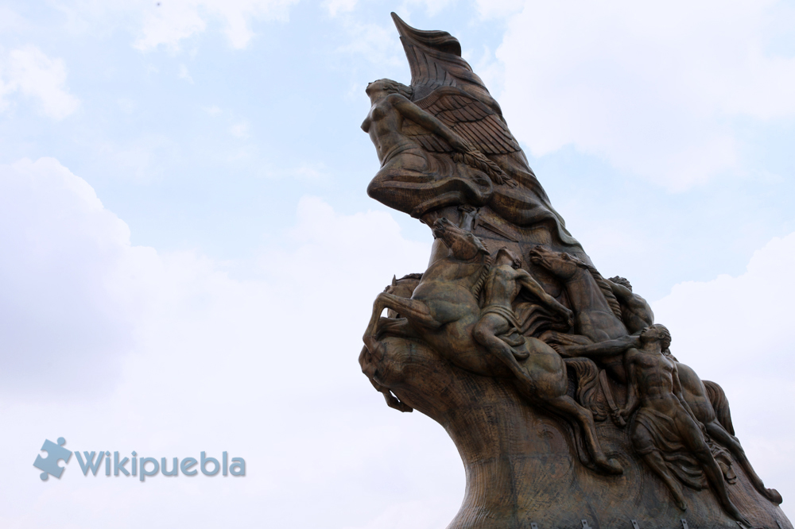

Batalla de Puebla
Atlixco Puebla (1862)


La Batalla de Atlixco tuvo lugar el 4 de mayo de 1862 en las inmediaciones de la Hacienda de las Traperas en Atlixco en el estado de Puebla, México, entre elementos del ejército mexicano de la república, al mando de los generales Antonio Carvajal y Tomás O'Horan contra las tropas al servicio del Segundo Imperio Mexicano comandadas por el general José María Cobos y de Leonardo Márquez, compuesta de soldados conservadores mexicanos en apoyo de envío de refuerzos para llevar a cabo la Batalla de Puebla, durante la Segunda Intervención Francesa en México.
Esta batalla culminó con una victoria republicana y debido a esto el grupo conservador de Márquez no pudo lograr su objetivo de auxiliar a las tropas francesas del Conde de Lorencez en la batalla de Puebla.
El 5 de mayo es una fecha muy importante para todos los mexicanos. El cinco de Mayo se conmemora el día de la Batalla de Puebla, en la cual el ejército mexicano venció al ejército francés. Cada ano se celebra en México, con orgullo y pasión, esta victoria con grandes festejos.
Antes del 5 de Mayo, el día 28 de abril de 1862, tuvo lugar un enfrentamiento conocido como la Batalla de las Cumbres entre el Ejército Expedicionario Francés y el Ejército Mexicano. En este conflicto hubo cerca de 500 bajas francesas en contra de apenas 50 bajas mexicanas.
El 2 de mayo parte el Ejército Expedicionario Francés desde San Agustín del Palmar en Veracruz con rumbo a cruzar la Sierra Madre Oriental y dirigirse hacia Puebla, era paso obligado para llegar a la capital mexicana.
Otros generales mexicanos también participaron en la defensa de Puebla como es el caso de las tropas de Oaxaca dirigidas por Porfirio Díaz. El centro de la línea lo defendió Francisco Lamadrid con las tropas del Estado de México y San Luis Potosí. La izquierda se apoyó en el cerro de Acueyametepec, ubicado en el norte de la ciudad, y en cuya cumbre están los Fuertes de Loreto y Guadalupe, con el general Miguel Negrete a la cabeza de la Segunda División de Infantería.

En 1857, ocurrió la Guerra de Reforma : un conflicto armado donde los liberales afrontaron los conservadores para impedir que la nueva constitución restituya a los militares y a la Iglesia los privilegios que habían perdido con las Leyes de Reforma. Benito Juárez, gobernador de Oaxaca al momento del conflicto, representaba a los liberales y Ignacio Comonfort, presidente de la República, representaba a los conservadores. Despues de 3 años, a principio del año 1961, los liberales ganaron la guerra y el Presidente Benito Juárez instauró su gobierno en la Ciudad de México.
Pero despues de 3 años de conflicto, México está financieramente en ruinas y tiene deudas enormes que los conservadores contrataron con banqueros europeos para pagar la guerra. La deuda era de 80 millones de pesos; 69 millones para los ingleses, 9 millones para los españoles y 2 millones para Francia.
Enrique Norten fue el encargado de diseñar una plaza-monumento para conmemorar el 150 aniversario de la Batalla del 5 de Mayo. La obra está ubicada en el cerro de Loreto, al en el norte de la ciudad de Puebla.
El arquitecto tendió una alfombra de madera con cimas, depresiones, areneros, un mirador que también funciona como galería de usos múltiples y un kiosco para venta de bocadillos.
Nada que hable de batallas, de zuavos –regimiento de infantería francés— cayendo heridos ni de indígenas zacapoaxtlas o xochiapulcas que machete en mano enfrentan a las huestes de Napoleón III. No hay referencias a Ignacio Zaragoza, Miguel Negrete, Porfirio Díaz o a algún otro militar que participara en la emblemática Batalla.
Pero sí hay, cuenta Salvador Arroyo, director de la oficina en México del despacho TEN Arquitectos, 150 árboles, "uno por cada año de los que han pasado desde 1862, y 11 tubos de luz, por cada uno de los batallones que participaron en la contienda, con una ubicación que refleja la relación espacial que tuvieron, y esa fue la única concesión que se hizo al simbolismo de la obra".


Famoso militar mexicano qiuen enfrentó las fuerzas francesas de Napoleón III en Acultzingo en la llamada Batalla de Las Cumbres de Acultzingo, el 28 de abril de 1862. Zaragoza comprendió la posición defensiva y favorable que tenía la ciudad de Puebla, paso obligado para ir a la Ciudad de México, y con un ejército más pequeño y menos equipado que los franceses, logró dar una batalla excepcional desde los cerros de Loreto y Guadalupe el 5 de mayo de 1862.

Militar y político mexicano, Porfirio Díaz ingresó en el ejército, y su carrera militar fue meteórica. En la guerra de Reforma (1858-1861), conflicto civil en el que se enfrentaron conservadores y liberales, apoyó la causa liberal.

Felipe Berriozábal Militar e ingeniero, nació en Zacatecas. Fue gobernador de los estados de México, Michoacán y San Luis Potosí. Como militar llegó a General y fue ministro de Guerra y Marina. Participó en la Guerra de Reforma y contra la Intervención Francesa.
Durante la Segunda Intervención Francesa en México, Negrete hizo a un lado su ideología conservadora y participó en la defensa del territorio mexicano, ante el avance de las tropas francesas hacia el centro de México, Negrete reacciona y se pone de parte del bando liberal con su célebre frase “Yo tengo Patria antes que Partido”

Militar francés, héroe de la Guerra de Crimea y de la Batalla de Solferino, el Conde de Lorencez llegó lleno de expectativas al puerto de Veracruz, el 5 de marzo de 1862. Ahí recibió el mando superior y fue ascendido a general.
En Europa el ejército francés era considerado el mejor del mundo. La derrota ante la resistencia mexicana generó en la población del país invasor una reacción de histeria y decepción. Sin embargo, como todo en la vida, la revancha está presente y los franceses solicitaron refuerzos a Napoleón III para ejecutar un exitoso contraataque, para así lograr una victoria que erigió el Segundo Imperio Mexicano a cargo de Maximiliano de Habsburgo.


 3
3 7
7